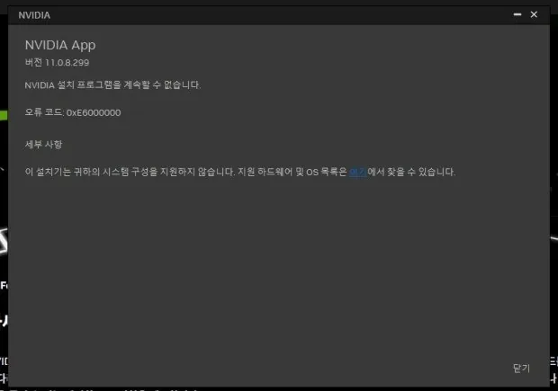

그래픽 드라이버
NVIDIA App 설치 오류 0xE6000000 해결 방법
"NVIDIA 설치 프로그램을 계속할 수 없습니다. 오류 코드: 0xE6000000. 이 장치는 귀하의 시스템 구성을 지원하지 않습니다"라는 메시지가 뜨는 경우
이 오류가 뜨면 그래픽카드가 고장 났다고 오해하기 쉬운데, 실제로는 카드 문제가 아니라 NVIDIA App(예전 지포스 익스피리언스를 대체한 통합 프로그램)이 특정 세대 이전 카드의 설치를 거부하는 것입니다. NVIDIA가 2025년 10월부터 GTX 900·10 시리즈(Maxwell·Pascal 세대) 카드를 정식 드라이버 트랙에서 분리해 보안 업데이트만 제공하는 레거시로 전환했고, 새 통합 앱은 이 세대 카드에서 설치 자체를 막아놓았습니다.
이 가이드가 필요한 상황
- NVIDIA App으로 드라이버를 설치하려는데 "시스템 구성을 지원하지 않습니다"라는 메시지가 뜬다.
- 오류 코드가 0xE6000000으로 표시된다.
- 게임에서 "그래픽카드가 구버전이니 업데이트하라"고 나오는데 업데이트가 안 된다.
- GTX 1060·1070·1080이나 GTX 900 시리즈처럼 몇 년 전에 나온 카드를 쓰고 있다.
먼저 확인할 항목
- 내 카드가 어느 세대인지 확인 — 장치 관리자 → 디스플레이 어댑터에서 정확한 모델명을 확인하세요. GTX 900·10 시리즈(Maxwell·Pascal)라면 이 문제에 해당할 가능성이 높습니다.
- NVIDIA App이 아니라 nvidia.com에서 직접 드라이버 받기 — NVIDIA 드라이버 다운로드 페이지에서 제품 종류·모델을 직접 선택해 받으면, 앱을 거치지 않아 이 오류 없이 설치됩니다.
- 설치되는 드라이버가 실제 최신인지 확인 — 해당 세대의 마지막 정식 지원 버전(2025년 10월 기준 R580 계열)이 설치되는지 nvidia.com 페이지에서 버전을 확인하세요.
- 기존 드라이버 완전 제거 후 재설치 — 위 방법으로도 설치가 꼬이면 DDU(Display Driver Uninstaller)로 안전 모드에서 기존 드라이버를 완전히 지운 뒤 다시 설치하세요.
드라이버는 설치됐는데 게임이 계속 구버전이라고 할 때
여기서부터는 정직하게 봐야 합니다. 게임이 요구하는 최소 드라이버 버전이 해당 카드가 받을 수 있는 마지막 정식 버전보다 더 최신이라면, 드라이버를 아무리 다시 설치해도 그 요구 버전에 도달할 수 없습니다. 이 경우는 소프트웨어로 해결되지 않고, 그래픽카드를 최신 세대로 교체해야 그 게임을 계속 플레이할 수 있습니다.
드라이버 설치 오류만 보고 바로 그래픽카드를 교체하지 마세요. 위 2번 방법(nvidia.com에서 직접 다운로드)으로 먼저 설치가 되는지 확인한 뒤, 그래도 게임이 요구하는 버전에 못 미칠 때만 교체를 고려하세요.
실제 사용자 사례
위 점검 순서로도 원인이 불확실할 때, 실제 진단 사례를 참고하면 도움이 됩니다.
GTX 1060 6GB에서 실제로 확인된 0xE6000000 오류
i7-6700, GTX 1060 6GB, Windows 11 Pro 25H2(OS 빌드 26200.9168)를 쓰는 PC에서 특정 게임이 "NVIDIA가 구버전이니 최신으로 업데이트하라"며 실행을 막았습니다. NVIDIA App으로 업데이트를 시도하니 아래처럼 오류 코드 0xE6000000과 함께 "이 장치는 귀하의 시스템 구성을 지원하지 않습니다"라는 메시지가 떴습니다.

GTX 1060은 Pascal 세대로, NVIDIA가 2025년 10월 이후 정식 드라이버 트랙에서 제외한 세대와 정확히 일치합니다. 카드가 고장 난 것이 아니라 NVIDIA App이 이 세대를 아예 설치 대상에서 뺀 것이 원인이었습니다.
포인트: NVIDIA App에서 오류 코드 0xE6000000이 뜬다면 카드 고장을 의심하기 전에 카드 세대부터 확인하세요. GTX 900·10 시리즈라면 NVIDIA App 대신 nvidia.com에서 직접 드라이버를 받는 것으로 설치 자체는 해결되지만, 특정 게임의 최소 드라이버 요구사항 자체를 만족 못 시킬 수 있다는 점은 별개로 남습니다.
피해야 할 실수
- 오류 코드만 보고 바로 그래픽카드가 고장 났다고 단정하는 것
- NVIDIA App에서 막혔다고 nvidia.com 직접 다운로드도 안 해보고 포기하는 것
- 드라이버 설치 문제와 특정 게임의 최소 사양 미달 문제를 구분하지 않는 것
자주 묻는 질문
- 그래픽카드가 고장난 건가요? 아닙니다. 카드 자체는 정상입니다. NVIDIA App이라는 프로그램이 특정 세대 이전 카드의 설치를 막아놓은 것으로, 드라이버 자체가 없는 게 아니라 이 앱을 거치지 않고 받으면 정상적으로 설치됩니다.
- 드라이버는 정상 설치됐는데 게임에서 계속 구버전이라고 나와요. 게임이 요구하는 최소 드라이버 버전이 해당 카드의 마지막 정식 지원 버전보다 더 최신일 수 있습니다. 이 경우 드라이버를 더 올릴 방법이 없어 그래픽카드 교체가 필요할 수 있습니다.
- 제 카드도 이 문제를 겪을 세대인지 어떻게 확인하나요? 장치 관리자 → 디스플레이 어댑터에서 카드 이름을 확인한 뒤, NVIDIA 공식 지원 목록에서 해당 모델이 현재 정식 지원 세대인지 확인하세요. GTX 900·10 시리즈(Maxwell·Pascal)가 여기에 해당합니다.
공식·참고자료
함께 보면 좋은 페이지
최종 검토일: 2026-09-16